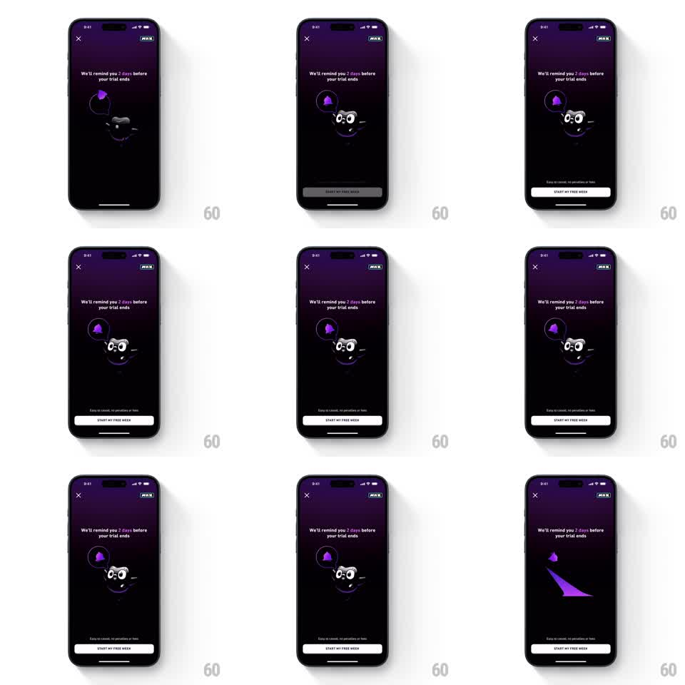

Media
Frame-by-frame

Rebuild this animation 1:1: Duolingo Max's trial-reminder screen - a dark idle scene where the mascot floats gently beside a purple reminder bell that wiggles on a loop.

Rebuild this animation 1:1: Duolingo Max's trial-reminder screen - a dark idle scene where the mascot floats gently beside a purple reminder bell that wiggles on a loop. ## Integration Integration: stack-agnostic spec - springs given as stiffness/damping, timed motions as duration + curve; map every value to your framework and animation library of choice. ## Scene A dark purple Duolingo Max screen: close X top-left, MAX badge top-right, the copy "We'll remind you 2 days before your trial ends", and a "START MY FREE WEEK" button pinned at the bottom with the small print "Easy to cancel, no penalties or fees". Center stage, the black-suited Duo mascot floats, holding a speech bubble with a purple bell icon. The bell wiggles periodically; the mascot bobs. ## Motion spec Pattern: idle float with bell wiggle, ~3s loop. - The mascot floats vertically (plus/minus 8px, 3s period, ease-in-out) with a slight rotation sway (plus/minus 2 degrees). - The bell wiggles on its own rhythm: a quick rotation shake (plus/minus 12 degrees, 3 oscillations over 500ms) every 2s, its clapper swinging opposite. - The speech bubble follows the mascot's float at a slight delay (100ms lag), giving a held-object feel. - Button, copy, and chrome stay still; the exit transition wipes a purple streak up the screen (400ms, ease-in). ## Calibration - Two rhythms at once: the slow float and the quick bell wiggle never sync up. - The bell's wiggle is rotation around its top hinge point. ## Reduced motion Mascot and bell hold still. ## Don't miss - The bubble and mascot move as one unit with lag, not independently. - The purple streak exit wipe anchors the MAX brand moment.